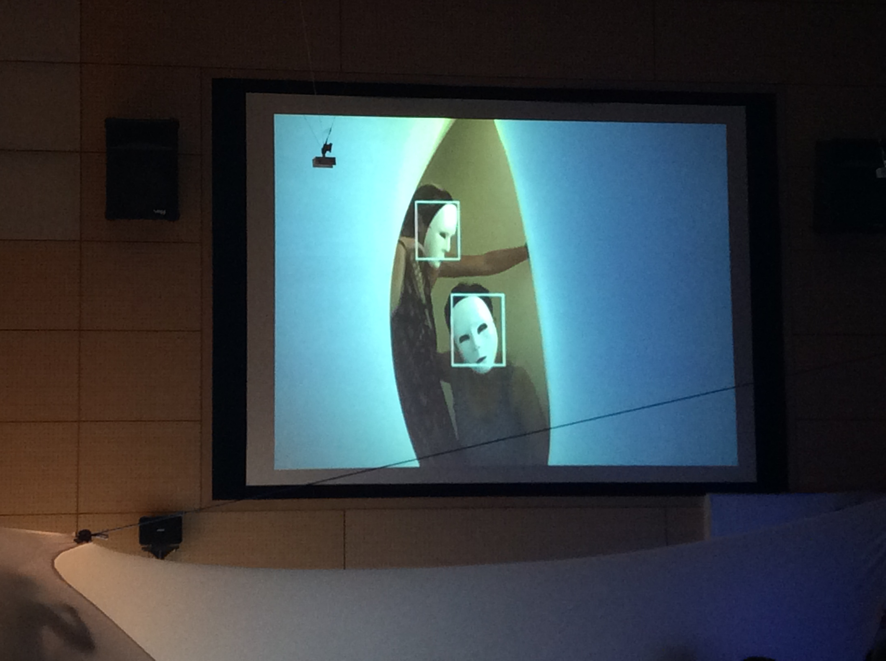
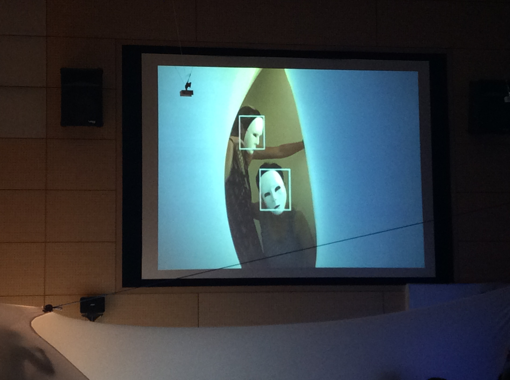
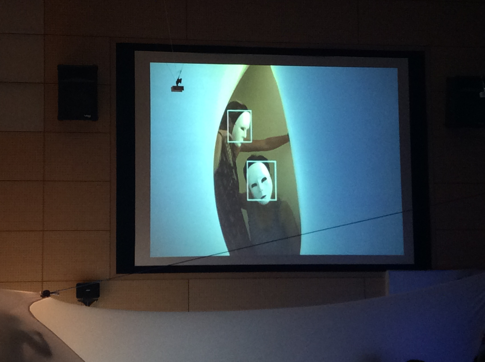

“Protasis: on becoming a body”
タイトル: 導入; 身体として生成すること
Joana Chicau
Greek proposition, literally, a stretching forward, equivalent to “pro”+ “tásis” a stretching;
ギリシャ的命題; 文字通り、身体を差し出す、「Pro + tasis」に等しい。
In grammar construction it is the clause expressing the condition in a conditional sentence, in English usually beginning with “if” [@RandomHouseDictionary].
“The body is always in a state of becoming , as its nature, the world and the universe. Drawing on the mind-body philosophies of Hiroshi Ichikawa and Yasuo Yuase, Japanese theorist Shinegori Nagatomo (1992) describes the process of perpetual becoming of the body, as that of attunement. Here, the body - any body, human, plant, animal - is always already an interaction. It is always modified through interaction with the living ambiance, which is the totality of shaped things, beings and phenomena. The body is thus neither a stable concept nor a closed concept.” at Lushetich, N. (2016). Interdisciplinary performance. London: Palgrave Macmillan.
"Protasis" is an assemblage of performative experiments which interweave computer programming and technologies with the choreographic language of Space Dance.
From data constructions based visual capture and text material to the integration of a Kinect sensor —the work presented aims at exploring further the yet unknown relations between the body in motion and the technologic surroundings. Considering embodiment and technology — and their active role within building tacit knowledge as well as its relevance in our current information driven society.
Link to a video experiment using the kinect sensor and processing.
Below Images from the performance presented during "SPACE DANCE — When We see our Planet from Universal View Point" Tama-Rokuto Science Center on September 10th 2017, in Tokyo Japan:

This research project has been made possible by thanks to a subsidy from The Creative Industries Fund NL.